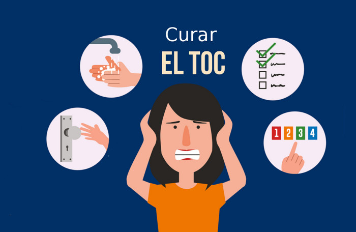

La Catatonia
se categoriza como un síndrome de alteraciones motoras,
se puede observar en varias patologías psiquiátricas y médicas, sus principales características son: flexibilidad cérea, mutismo y negativismo,
rigidez, inmovilidad debido a la rigidez.
Los sujetos que presentan este síndrome son incapaces de mover sus articulaciones por sí mismos,
tomando la posición que otros individuos lo dejen, entrando así en un estado de estupor, y estereotipia
FILOFOBIA
La filofobia se considera el miedo irracional a estar enamorado categorizado como un problema de ansiedad
que dificulta las interacciones sociales y en el estado emocional de los individuos que lo padecen.
Los pacientes filofobicos graves pueden alejarse de sus vecinos, amigos y/o posibles parejas.
La sensación de amor para estos pacientes genera un nivel de estrés y malestar emocional alto
Sus principales síntomas o características son: “ataques de pánico clásicos, desórdenes gastrointestinales,
latidos irregulares del corazón, sudores, falta de aire y un deseo de abandonar la situación cuanto antes,
como mecanismo de defensa para evitar sentir todos estos síntomas ansiosos”. (Garcia, s,f)
"El Trastorno Obsesivo Compulsivo" Es un trastorno neurológico, categorizado como una ansiedad caracterizada por la recurencia de pensamientos intrusivos que generan miedo, aprensión o temor, además de generar una serie de comportamientos (rituales) con el fin de disminuir los sintomas. El TOC, suele tener los inicios, en la infancia y/o adolescencia. aunque esta puede aparecer de manera subita causada por estres. Por otro lado los pensamientos obsesivos pueden aparecer como: Impulsos: caracterizado por agresividad generando en los demas miedos y daños Temores: Obsesción por imperfecciones fisicas y/o contagios (pisar lineas del suelo, lavarse las manos constantemente) Ideas: Se manifiesta como una obsesión por el orden y la limpieza, generando pensamientos de contaminación y contagio Dudas: Comprobar de manera repentina que las actividades desarrolladas si se hayan desarrollado realmente. (abrir y cerrar puertas, apagar bombillos)